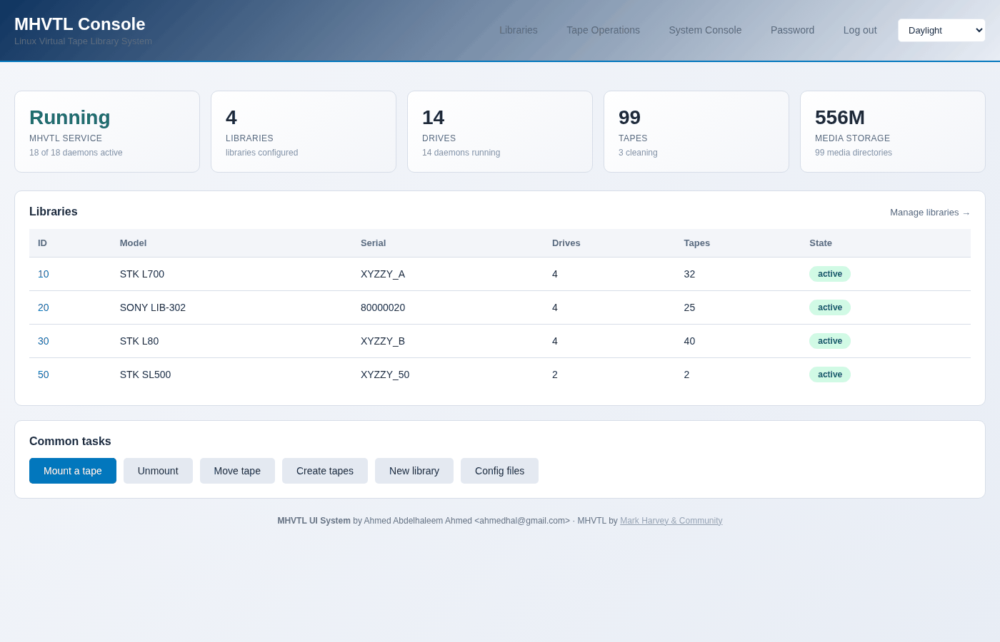
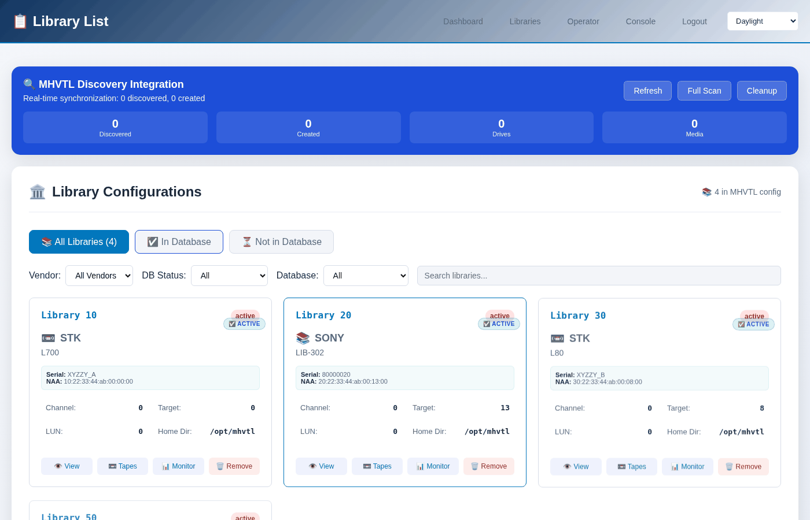

A first look
This walks through opening the console for the first time and checking that MHVTL underneath it is running. Installing it is in the Guides - Installation.
Log in
Open https://your-server/. The certificate the installer creates is
self-signed, so a browser asks about it once.
There is one password for the whole console, and it starts as mhvtl.
While it is still that, every page carries a warning saying so, with a link
that changes it. See The password, and who can reach this.
http://your-server/ redirects to the HTTPS address.
Note
If something else on the host already uses port 80 or 443 - another web
application, a reverse proxy - the installer’s nginx configuration will
not start beside it, and whoever installed it will have moved the console
to another port, usually 8443 with 8080 redirecting. Then the address is
https://your-server:8443/. Installation in the Guides has the
two lines to change.
Is MHVTL running?
The console is a window onto MHVTL, so if MHVTL is not running there is nothing to see. Console → Services answers it:
$ sudo mhvtl status system
mhvtl.target active, enabled
modules mhvtl loaded
libraries 3/3 running
drives 12/12 running
If the target is not active:
$ sudo systemctl start mhvtl.target
What you see first
Dashboard is the overview: how many libraries, how many are running, what the host is.
{kind=link}

Libraries lists every library MHVTL has, read from its configuration rather than from the console’s own records - so a library somebody created from the command line a minute ago is in the list.
{kind=link}

Click one and you are on The library page, which is where most work happens.
The same thing from the terminal
$ sudo mhvtl library list
ID MODEL SERIAL DRIVES SLOTS TAPES
-- ------------ -------- ------ ----- -----
10 STK L700 XYZZY_A 4 39 32
20 SONY LIB-302 80000020 4 40 25
30 STK L80 XYZZY_B 4 40 40
mhvtl reads the same configuration the console does and needs no web
server running. Everything in this guide can be done either way; each page
shows both.
If there are no libraries yet
That is the ordinary state after installing. Go to Creating a library.